[목차]
#1 프리팹(Prefabs)
#2 프리팹 생성방법
#3 프리팹 오버라이딩 (Prefabs Overriding)
#4 프리팹 수정
#5 스크립트를 이용한 프리팹 인스턴스화
* 개인적인 공부 내용을 기록한 포스팅 이기에, 잘못된 내용이 있을 수 있으며 지속적으로 수정해 나갈 예정입니다.
#1 프리팹(Prefabs)
프리팹(Prefabs)이란, Scene에 존재하는 오브젝트와 오브젝트의 컴퍼넌트들을 하나의 에셋(Assets)형태로 만드는 기능입니다.
RPG게임을 제작하고 있다고 가정해 봅시다. 월드에는 수많은 종류의 몬스터들이 존재할 것입니다. 만약 프리팹 기능을 사용하지 않고, 몬스터들을 Scene에 배치한다고 생각해 보면 몬스터의 수 만큼 오브젝트를 생성하고 컴퍼넌트를 부착해 주어야 할 것입니다.
이는 매우 비효율적인 과정이며, 심지어 몬스터의 체력을 수정해야 하는 의뢰가 들어온다면 필드의 모든 해당하는 몬스터를 찾아서 하나씩 HP를 변경해 주어야 합니다. 하지만, 프리팹(Prefabs)을 사용하면 손쉽게 변경이 가능합니다.
#2 프리팹 생성방법
프리팹 생성 방법은 간단합니다. Hierarchy 창에서 프리팹으로 만들기를 원하는 오브젝트를 선택한 후, Assets 창으로 드래그 앤 드랍(Drag and Drop) 합니다.
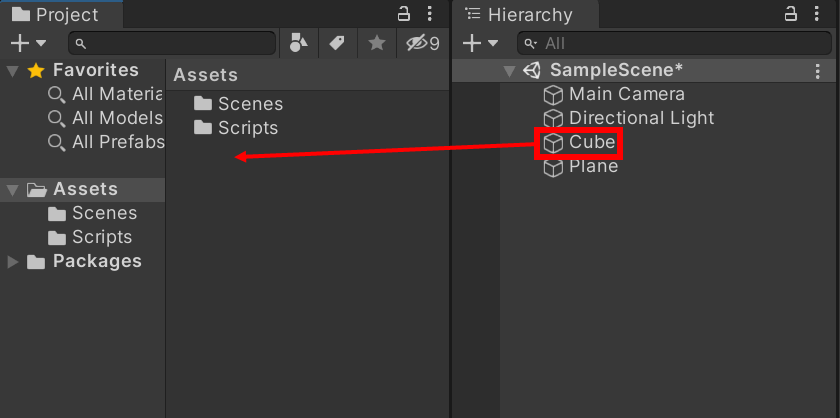
그러면, 다음과 같이 일반 에셋들과 구분되는, 파란색 정육면체가 생성됩니다. 이는 프리팹(Prefabs) 이라는 표시입니다.
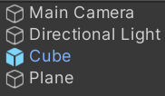
생성한 프리팹을 Scene으로 드래그 앤 드랍하면, 동일한 컴퍼넌트와 속성을 지닌 오브젝트가 여러개 생성됩니다. 이렇게 프리팹을 Scene에 배치하는 일련의 과정을 "프리팹의 인스턴스화" 라고 부릅니다.
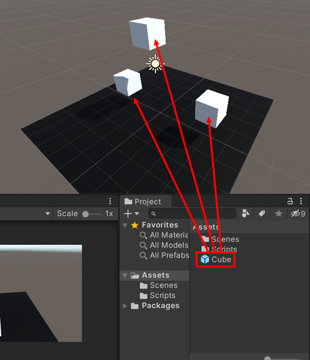
#3 프리팹 오버라이딩 (Prefabs Overriding)
Scene에 배치한 프리팹을 오버라이딩 하는 것 도 가능합니다. 단순히 컴퍼넌트의 값을 바꿔주면 되는데, 오버라이딩을 수행한 프리팹은 다음과 같이 굵은 글자로 표시됩니다.
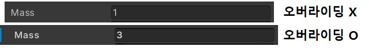
오버라이딩이 된 프리팹은, 부모 프리팹에서 값을 변경해도 오버라이딩한 값이 그대로 유지됩니다.
#4 프리팹 수정
프리팹을 더블 클릭하면, 프리팹을 수정할 수 있는 가상의 파란색 창이 열립니다. 이 곳에서 , 프리팹의 다양한 속성들을 수정할 수 있습니다.
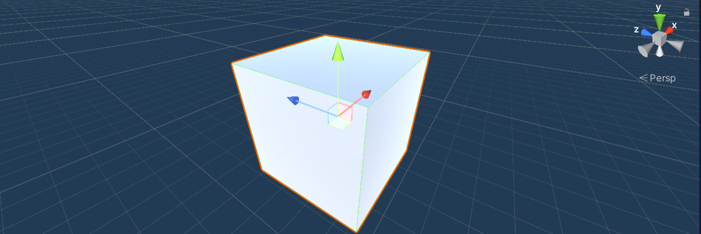
좌측 상단의 < 화살표를 누르면, 원 상태로 돌아갑니다.
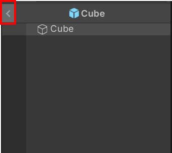
#5 스크립트를 이용한 프리팹 인스턴스화
마지막으로, C# 스크립트 파일을 이용해 프리팹을 인스턴스화 하는 방법에 대해 정리 하도록 하겠습니다.
[1] Scene 에 배치된 오브젝트를 이용하는 방법
첫 번째 방법은 Scene 에 빈 오브젝트를 배치한 뒤, 스크립트 파일을 연결하여 프리팹을 생성하는 것 입니다.우선 아래와 같이 CubeSpawner 빈 오브젝트를 생성하고, CubeSpawner에 부착할 CubeSpawner.cs 스크립트 파일을 생성합니다.
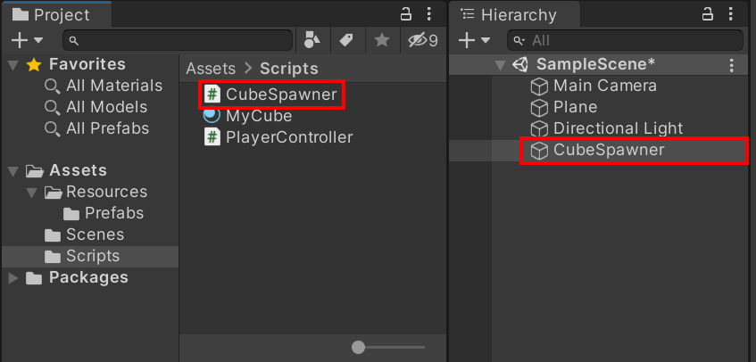
CubeSpawner.cs 파일에 다음과 같이 코드를 작성합니다.
using System.Collections;
using System.Collections.Generic;
using UnityEngine;
public class CubeSpawner : MonoBehaviour
{
public GameObject prefabs;
GameObject cube;
void Start()
{
cube = Instantiate(prefabs);
}
}* Instantiate() 함수는 프리팹을 인스턴스화 하여 Scene에 배치해 주는 함수 입니다.
소스코드를 저장하고, CubeSpawner 빈 오브젝트에 스크립트 파일을 부착해 줍니다.
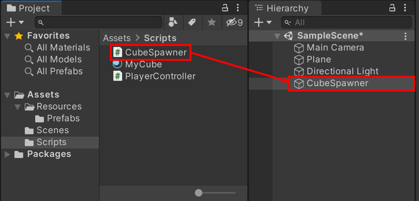
마지막으로, CubeSpawner 빈 오브젝트를 클릭한 뒤, 인스펙터 창의 Prefabs 항목에 생성하고자 하는 프리팹을 부착해 줍니다.
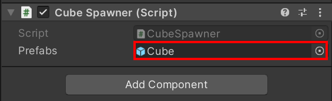
실행해 보면 CubeSpawner에 의해서 Cube 프리팹 하나가 자동으로 생성됩니다.
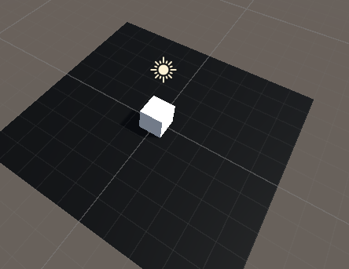
[2] Resources 폴더를 이용하는 방법
두 번째 방법은 Resources 폴더를 이용하는 방법입니다. Resources 폴더란, 스크립트 파일 외의 것들을 저장하는 폴더인데 Resources 폴더를 생성해 주신 뒤 그 안에 Prefabs 폴더를 생성하고 , 프리팹 파일을 Prefabs 폴더 안에 넣습니다.
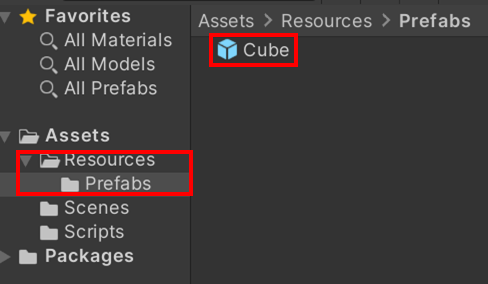
CubeSpawner.cs 파일의 내용을 다음과 같이 수정해 줍니다.
using System.Collections;
using System.Collections.Generic;
using UnityEngine;
public class CubeSpawner : MonoBehaviour
{
public GameObject prefab;
GameObject Cube;
void Start()
{
prefab = Resources.Load<GameObject>("Prefabs/Cube");
Cube = Instantiate(prefab);
}
Resources.Load<>("경로") 함수를 이용해 Resources 폴더 아래에 존재하는 프리팹을 불러옵니다.
그 후에 Instantiate() 함수를 이용해 Scene에 불러온 프리팹을 생성합니다.
결과는 1번 방식과 동일합니다.